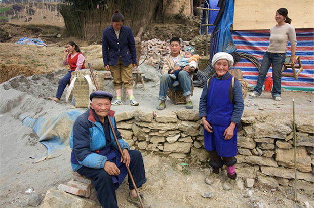

早上刚从西安回来，直接就跑来上班了。六一儿童节，早已不是我们的节日，班还是要上的。但坐在办公室里，思绪和心境还一直没有从这次旅途跳离出来，在华山顶被蜂蜇的手指还在发痒。对于我这种反应不快的人，现代交通的方便快捷，总能让我在时空的迅速转换中感受到一些奇妙的感觉。 西安和北京是很不一样感觉的城市，但我只在西安待了几天，所以这种判断未免缺乏说服力，也许这两种不同的感觉仅仅是源于我在这两个城市的不同身份。北京，如果只是我旅行的一站，而不是我打工谋生的地方，会不会好一点呢？也许我就可以很休闲地坐在路边看人来人往，而不是每天被上下班的人流推着走。我希望以后有更多的机会去一些别的城市走走看看，这样的意愿在这次西安之行后显得特别清晰强烈。 西安是个很特别的城市，起码我回忆起这几天来是这样，但所谓的特别也并不都是指好的方面。总之，基于很多原因，这次西安之行留给我很深的印象，必然也会是我很怀念的一次旅程。这里也很庆幸有两个人和我们一起出游，我妹和我的大学同学。 接下来的几天，我想除了整理照片发给他们之外，再整理整理西安印象，记录一下。最重要的，我自己还有些事需要好好思考。希望能有个好的结果。 送首歌给我们四个，主要是我自己。很古董的歌手陈丽斯——《问我》，但旋律不显得很古董，因为香港电视台，经常有需要唱些歌开解大家，让大家乐观点的时候，就会有人走出来唱这首歌的了。儿童节快乐。 http://www.coletree.com/upload/wenwo.mp3 问我欢呼声有几多，问我悲哭声有几多 我如何能够一一去数清楚 问我点解会高兴，究竟点解要苦楚 我笑住回答讲一声：我是我 无论我有百般对，或者千般错 全心去承受结果 面对世界一切，哪怕会如何 全心保存真的我
欧冠马上决赛
还有几个小时就要开始的这场比赛，的确是近年最让人期待的一场决赛。 我只希望不要出现像半决赛那样的裁判失误，不管是有利于哪方的。干干净净地踢完这场比赛，不要留下太多争议。这样不管谁赢谁输，都不是最重要的；重要的是，对喜欢足球的人来说，今晚是个不错的节日。希望能有一场精彩的比赛。不枉我熬夜一宿。 在小长假开始的第一天晚上，能够欣赏一场这样的比赛；然后睡个觉，洗个澡，踏上出游的征程，玩足三天；回来赶上过个六一儿童节。想想这一切是多么惬意的事情。 不过这个赛季，许多记录都不断被打破。所以我感觉欧冠无球队能卫冕这个定律，也该到头了，鲁尼加把劲。多猜无益，打两盘实况，过几个小时开始享受就好了。
一年
 那么快就一年了，那些画面还历历在目，感觉没多久的事情。一年了，该道歉的没有道歉，该追究责任的没有追究责任，该做的很多都没做。代表着胜利的晚会倒是开了不少，对受灾人民的”糖衣炮弹”不少，对志愿者的阻挠也不少，不该做的倒是做尽了。那么大的一场灾难，一年过后，发现也没能改变什么。 推荐一个网站：www.afterquakemusic.com/index.html
Anak - Child - 孩子
母亲节到了，没有什么送给妈妈的礼物。对于所有的一些节日，情人节等等，其实都不大喜欢约定俗成的事项。比如是不是一定要买康乃馨之类，现代的很多节日规矩，大都是商家背后驱使罢了。不过在这个问题上较真也没什么意思，不如送歌吧，免费的。 附上一首菲律宾 Freddie Aguilar的《Anak》，英文叫《child》，中文叫《孩子》。这首歌先后被20多种语言翻唱过，至少有50多个版本，有名的程度可见一斑。据说在菲律宾仅次于国歌的地位。这位Freddie Aguilar在1978年，带着自己真情谱写的歌曲《Anak》，参加了马尼拉的第一届大都会流行音乐节歌唱大赛，引起了巨大反响。后来评委考虑到这是流行音乐节，这歌太像民谣，所以只给了他亚军。 关于这首歌背后的故事，网上有两种说法。一种是：Freddie Aguilar当年穷困潦倒，过着乞丐一样的生活。在他最困苦最潦倒的时候，他的孩子降临到了这个世上，他想将美好的生活、深沉的父爱，留给这个新生命；但他没有这样的能力，他很自责、难过和彷徨，留着泪写下了 Anak。第二种是：Freddie Aguilar 在 18 岁的时候带着吉他离开学校，而他的父亲希望他成为一名律师。而他随后陷入赌博，浪费五年光阴。在认识到自己的错误之后，他写下这首歌，请求父母的原谅。 哪个说法更准确无法考究，我想不管是作为孩子，还是父母亲这两方面的角色，其实都未必好担当。若能互相理解，相处融洽，实在是难能可贵。好好珍惜吧。 http://www.coletree.com/upload/Anak.mp3 When you were born into this world - 当你诞生到这个世上 Your mom and dad saw a dream fulfilled - 你的父母实现了一个梦想 A dream come true - 一个成真的美梦 The answer to their prayers - 他们所有祈祷的回报 You were to them a special child - 对他们来说，你是个特别的孩子 Gave ‘em joy every time you smiled - 每当你微笑，就带给他们欢乐 Each time you cried - 而每当你哭泣 They’re at your side to care - 他们都会在你身边照顾你 *Child, you don’t know - 孩子，你不知道 You’ll never know how far they’d go - 你永远不会知道他们会付出多少 To give you all their love can give - 来给你所有他们可以奉献的爱 To see you through, and God it’s true - 来看到你平安，而上帝，那是真的 They’d die for you, if they must, to see you live - 他们会为你死，如果有必要，来让你活下去 How many seasons came and went - 多少个季节来了又去了 So many years have now been spent - 如今已经过了这麽多年 For time ran fast - 因为时光匆匆流逝 And now at last you’re strong- 而今你终于已经壮大 Now what has gotten over you - 可是你究竟在想什麽 You seem to hate your parents too - 你还似乎憎恨着你的父母 Do speak out your mind - 请大声说出你的想法 Why do you find them wrong - 为什麽你觉得他们错了 Child, you don’t know - 孩子，你不知道 You’ll never know how far they’d go - 你永远不会知道他们会付出多少 To give you all their love can give - 来给你所有他们可以奉献的爱 To see you through, and God it’s true - 来看到你平安，而上帝，那是真的 They’d die for you, if they must, to see you live - 他们会为你死，如果有必要，来让你活下去 And now your path has gone astray - 如今你的道路已经偏差 Child, you ain’t sure what to do or say - 孩子，你不知道该怎麽办 You’re so alone - 你好孤单 No friends are on your side - 身边没有任何的朋友 And child, you now break down in tears - 而孩子，你如今在哭泣中崩溃 Let them drive away your fears- 让他们赶走你的恐惧 Where must you go - 你还要到哪裡去 Their arms stay open wide - 他们的臂膀永远为你敞开
“读及听”
睡觉前，一些事，搅乱了心情，乱的不是事情最终可能的结局，而是事件中难测的人心。突然觉得累了，起来换换心情，翻开《失物之书》，看看这本属于成年人的睡前故事。 睡前故事，显然那得追溯到好早以前了，已记不太清童年时有哪些故事被父母当做睡前故事给我念过。只想起来一个词：“读及听”。这三个字用乐山话念出来的时候，就有了属于家人之间的孩子气。这个词，从我小时候要爸妈念故事时开始用，直到现在，偶尔还会听到他们这么说，通常是其中一个在看报纸，另一个就会让看报纸的“读及听”，而我，已经很久不用了，因为早已过了撒娇要听故事的年龄。但其实我也发现，有时候聊着天睡觉会比纯粹安静的睡觉容易入睡。大概温柔低沉的人声，也有类似于薰衣草安神助眠的功效。 很巧最近连续看了两部关于念故事的电影：《睡前故事》和《帕高与魔法绘本》。截然不同的美式和日式风格，但相同的是看完它们的两个晚上，我都睡得很好。《睡前故事》是典型的好莱坞片，看了开头就能猜到皆大欢喜的结局，但看完后心情还是快乐的；《帕高与魔法绘本》虽然结局会有些伤感，但影片里那些浓烈的色彩，夸张的表演，一群怪人之间的琐碎关系，竟交织拼合出意想不到的温馨。《睡前故事》表面上讲给孩子听，实际上却应验在讲述者的生活中，它是一出成人的童话喜剧，也是一个不错的成人睡前故事。《帕高与魔法绘本》里，成人在给孩子创造童话现实的同时，也奇迹般完成了自我新生。 《失物之书》刚看了个开头，一个看起来注定悲剧的开头。这个会每天给妈妈念故事的孩子，他的心事，读来却有种被揉碎掺杂了好多忧郁的温柔。不知道他的枕边书故事，会带他去到一个什么样的世界。 第一章里，这样写道：
妈妈曾经告诉他，故事是活的。它们和人，和猫、狗活着的方式不一样。人活着，不论你在意还是不在意；而狗会使劲儿引起你的注意，如果你没有对它十分注意的话。猫呢，如果跟人在一起习惯了，它们会很善于假装人根本不存在。 可故事就不同：它们活在讲述中。假如没有被人类的声音大声朗读过，没有被一双睁得大大的眼睛在毯子下面随着手电筒的光追寻过，它们在我们这个 世界就不算真正地活过。它们像鸟嘴里的种子，只等掉落土中，或是写在纸上的歌谱，渴望乐器将它们变为音乐。它们静悄悄的，希望有机会露面。一旦有人开始读 它们，它们就能带来变化。它们能在想像中生根，能改变读它们的人。故事想要被阅读，戴维的妈妈轻轻地说。它们需要被阅读，这就是它们拼命从它们的世界来到 我们的世界的原因。它们希望我们赋予它们生命。
故事想要被阅读，而我们其实从小到大再到老也都一直想要“读及听”的故事。
晓禾依树电台第二期
此电台节目已转移：http://www.coletree.com/podcast/2009/04/24/ 歌曲列表： 1.Time——The American Dollar 2.Family Tree——TV on the Radio 3.Tin Man——America 4.Wonder——Lamb 5.Wenchuan W-0-0-1——Sonicbrat 6.Wenchuan W-0-0-6——Sonicbrat http://www.coletree.com/radio/coletree_radio_002.mp3
回忆远去，声音仍有余温
小时候总是被老师叫起来念课文，念到外国名字的时候还会一本正经刻意学译制片里那种抑扬顿挫的腔调。温习功课的时候，也总觉得读出来，才更有感觉，字里行间的情绪通过声音传到耳朵，才能印象深刻。从小记性就不好，不念出来的东西，基本记不住，念出来的东西，能记住的也不多。但念出来了，即便某天忘记了确切的内容，还能感知到声音留下的余温。一年前，10万生命灰飞烟灭的时候，新加坡的一位音乐人选择了用音乐来祭奠他们。一年后，重听这张专辑，用声音连接回忆，纪念逝去的生命，也祝福他们在天堂安好。 [embed]http://www.coletree.com/radio/coletree\_radio\_002.mp3\[/embed\]
罗大佑和罗大左
继续怀旧老歌。 纵贯线北京的演唱会应该开完了吧？这四位大腕圈钱活动不知道收效如何。周华健，天天在地铁上见。一个志愿者的样子，笑得非常灿烂，把官方形象代言人这角色揣摩得入木三分。张震岳和李宗盛要好些，但当年人们称大腕的只有罗大佑。罗大佑的歌我以前还真的听的不多，因为要了解“教父”这个很有份量的称呼，光听《你的样子》《童年》《恋曲80》这些是不够的。于是这几天我开始重温一下罗大佑同志的旧歌。 随后我发现一首《亲亲表哥》的歌，竟然收录在罗大佑的专辑里。感到惊讶是因为，我以前听到这首歌，是在软硬天师的专辑里，当时凭着对歌词的第一印象，觉得这个歌就是拿罗大佑开涮的，用罗同志的旋律恶搞罗同志。不知道罗大佑同志的政治立场怎么就站错了，伤害了土生土长香港人民的感情，于是被讥讽了。 现在才知道这个歌竟然是罗大佑作的，是他自己的歌，不由得佩服起这位同志来。随后我发现罗同志作过不少此类不河/蟹的歌曲，例如《五十块钱》在大陆引进版里就被删掉了。不知道《皇后大道东》和《亲亲表哥》这类是否因为是粤语，而幸免于难？特别是《皇后大道东》，以前是禁播的，现在我偶尔还能听到有人在KTV里唱得非常开心，不亦乐乎。 《皇后大道东》的歌词已算非常牛了，字眼玩弄得可谓玄乎，一语双关的调侃也遍布全歌。《亲亲表哥》没有上者那么流行，所以不用封杀它，它就自生自灭了。原因可能一个是旋律没那么朗朗上口，没那么好吼。另外是里面有一大段软硬天师的说唱，这个估计听不懂粤语的人都不喜好。但《亲亲表哥》的歌词写得实在是有过之而无不及。《亲亲表哥》歌词讲述的主角是罗大佑同志，当然歌词中的罗大佑同志的立场是杜撰的。其实就是拿这样一个人物开涮，反映在97大背景下的香港市民反骨心态，颇具黑色幽默感。歌手拿自己形象编故事以自嘲，我暂时想不到华语里还有谁，虽然歌中“罗大佑”只是杜撰的形象，不代表真人立场。这首歌的歌词不管从文字的玩弄上，还是整体的气势上，都堪称经典。重要的是好玩之余，它丝毫不失其现实意义和讽刺意味。（歌词提到的罗大佑，罗大左，也很有趣味） 罗大佑在香港成立音乐工厂后，重心基本在香港，出了许多粤语歌。甚至后来都改成了国语版。我今天重温这些歌曲，觉得惊艳的还是那几首音乐工厂里的粤语歌。有个例子是当时出的粤语专辑《首都》，对应国语版是《原乡》。里面一首《飞车》对应国语的《火车》，你会感觉国语的唱的没那么爽，那是因为歌词与旋律分离，你填的词不是作曲人要说的意思。 而《飞车》是原创，那位作词的人理解体会罗大佑同志的思想非常到位，加上自己的功底，才有这样的佳作。恩，上面提到的这几首粤语的罗大佑作品，都是林夕作的词，就是那个写了无数都市情爱的林夕。有时我们看一个人还是会被条件局限，林夕不是只会写感情，牛人在于他的功力在那，问题是他想不想“为之”罢了。所以写罗大佑的同时，顺带表达一下对林夕的欣赏之情。 这三首歌的歌词都非常值得细细欣赏，鉴于众所周知的低俗原因，我不贴在博客上细说引火上身了。网上一搜全都是，方便得很。当然有些内容也许需要一些当时香港的情况知识，才好解读，可以找一些那边的朋友问问，别像这几位朋友这样就行了——围观链接。用《首都》专辑里的一段介绍作为我的总结：音乐工厂言人不敢言，唱人无胆唱，13 首歌大鸣大放爽上心头，香港乐评全体起立鼓掌一致通过！罗大佑出神入化率音乐工厂全体同志，唯恐天下不乱讽世钜作。 翻了一下纵贯线歌单，果然不会有当年那些歌中的任何一首。罗大佑是否变成了罗大左，只有他自己清楚。也不是说要一辈子站在浪尖才算民主斗士的。我们不了解他的生活和心境变化，不好去评判别人。当然如果有罗大佑的采访，我自己会关心，希望有这些内容。但目前也无所谓，先听着这些留下的经典，足已。